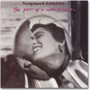

|

仕事柄もあるが、毎日浴びるように音楽を聴いて過ごしている。ジャンルを問わず、「今」のも「昔」のも。生もCDもテレビもある。中には苦手な音楽もあるが、大概はそれなりのおもしろさを発見して楽しんでいる。自分から好んで聴く音楽は、その日の気分で決まる。一日中、いや何日も同じCDばかり聴くときもあれば、あれこれいろいろ聴くときもある。よほど何かない限り、歌わない日があっても、ピアノを弾かない日があっても、わたしが音楽を聴かない日はない。
音楽のない生活などありえないという人は、たくさんいると思う。CDの売上げが減っているそうだが、CDを買わなくてもあらゆる方法で音楽が聴ける現在、売上げ減、すなわち音楽離れということではないだろう。聴くだけでなく、鼻歌を歌ったり、カラオケで歌ったり、楽器を演奏したり、曲を作ったり、たいていの人はさまざまな形で音楽に接しているはずだ。それにしても、人はなぜ音楽を愛し、歌を歌い、楽器を奏で、ときにむさぼるように聴くのだろう。
遠い昔から、人は時代や地域を超えて音楽を愛してきた。世界のどんな小さな村や集落にも、人のいる所には必ず歌があり、音楽がある。子守歌、作業歌、労働歌、求愛の歌、祝い歌、祭りの音楽、戦闘の音楽、凱歌、鎮魂歌、ダンスの音楽、劇音楽、宗教音楽……。人は何かにつけ、心を音楽に託し、生きる力を音楽に求めてきたのである。みずから歌い演奏することによって、あるいはそれを享受することによって。
生活に密着した音楽とは別に、純粋に音楽が音楽として在るために作られた「作品」あるいは「楽曲」についても、同じことが言えるだろう。ベートーヴェンの「交響曲第５番 ハ短調 作品67（運命）」も、チャーリー・パーカーの「パーカーズ・ムード」も、エディット・ピアフの「バラ色の人生」も、ボブ・マーリーの「ワン・ラヴ」も、数え切れないほど多くの音楽が、さまざまな表現で、生きることの喜びや悲しみや苦しみを伝えている。音だけの力で伝えるものもあれば、音と歌詞、そしてその歌声で伝えるものもある。外国の音楽よりも、Jポップとひとくくりにしてよいかどうか、ともかく歌詞が直に伝わる日本語の歌では、音や声よりも歌詞から直接、生き方や悲喜こもごものメッセージを受けとめ、そこに共感する人が多いかもしれない。
だが、たとえばバッハの「平均律クラヴィーア曲集」や「ゴールドベルク変奏曲」といった「作品」は、人間の生々しい感情や切々とした訴えとは無縁の、純粋な音の構築物である。グレン・グールドの演奏などに、それが最も顕著に表れている。一つ一つの音を吟味し、磨き上げ、ていねいに並べ、重ねたり、転がしたり、強くしたり弱くしたり、そうして完璧な音の構築物を築き上げていく。音だけが美しく、音だけが存在する。その音の一つ一つを聴く。研ぎ澄まされた幾多の音の粒が、生命を得て動き回る。その運動をじっと見つめるように、聴く。
そこにいるのは、わたしである。耳を傾け、集中して音の動きを追うわたしがいる。耳、心、全身全霊が研ぎ澄まされ、清らかに、穏やかに、ずっしりとした充実感に満たされていく。生きているわたしがいる。わたしは生きている。バッハを聴くと、それを感じる。それがたまらなく快感だから、わたしは好んでバッハを聴く。あるいは弾く。グールドには及ばないが、わたしなりに一つ一つの音を磨いて組み立てていく作業は大いなる喜びであり、至福の時である。フーガのテーマが各声部に次々と形を変えて現れるときの、ゾクゾクする感覚。それらが複雑に織り合わさって、最後に重厚なタペストリーが完成する達成感。音を紡いでいると、日常の煩いは消え去り、ヒリヒリと痛んですり切れた心も、激しく波打つ心も、穏やかに安らかに修復されていく。生々しい感情表現と無縁の音楽に、わたしはこうして「生きる力」をもらうのである。
人それぞれ、好きな音楽がある。モーニング娘。のたわいもない歌詞とノリノリの音楽（と、その音楽を演じるキャラクターの魅力）に、百万倍のパワーと元気をもらう人もいれば、トランス、ヒップ・ホップ、パンク……そうしたライヴで踊り狂って、明日への元気をもらう人もいる。みんな何らかの形で、音楽から「生きる力」をもらっているのだ。
音楽は人を救えるか？という問いかけを、昨年の９.11以来しばしば目にするようになった。チャリティーのライヴが相次いで開かれ、人々は「イマジン」を、あるいは「ゴッド・ブレス・アメリカ」を歌った。1985年のライヴ・エイドを始めとする幾多のチャリティー・コンサートは、その収益によって実質的な救済をめざすもので、音楽そのもので人を救えるかと問われれば、一瞬とまどってしまう。音楽で空腹は満たされない。家も建たない。生活が良くなるわけではない。だが、音楽で、引き裂かれてすさんだ心を安らかに温かく包むことはできるだろう。泣き顔をそっと笑顔に変えることはできるだろう。勇気と元気を、生きる力を与えることはできるだろう。そんなきれい事で片付けられる問題ではないことはわかる。音楽よりパンと水だろう。でも、なぜ人々は歌うのか。自分のために、仲間のために、遠い国の見知らぬ人々のために。日々の生活の中で誰が命じるでもなく、人は歌う。集まって声を合わせる。なぜだろう？
かつて17世紀から19世紀にかけて、アメリカに奴隷として連れてこられた多くのアフリカ人たちが、過酷な生活の中で歌い始めた労働歌や宗教歌が、やがてスピリチュアル（黒人霊歌）やゴスペル、ブルースなどに発展していったことを思い出そう。音楽は彼らにとって、つらく苦しい心の吐露であり、叫びであり、祈りであり、生きる支えであったのだ。
歌うことで救われる。音楽は救いである。彼らは現実を生きていく中で、次第にそう確信していったに違いない。
人はみな、それぞれの人生の中で、きっと何らかの形で音楽に救われた経験を持っていると思う。子供のころ、さみしくて悲しくてどうしようもなかったとき、母が歌ってくれた「七つの子」に涙も止まり、心がじんわりあったかくなったこと。多感な十代、失意のどん底でベートーヴェンのピアノ・ソナタ「熱情」の第２楽章を泣きながら弾き、その深い呼吸と同じテンポで弾いていくうちに、穏やかな光がさして、目の前がさぁっと広がっていったこと。心を病み、しばらくどんな音も音楽も受けつけなくなっていたとき、唯一、フェアグラウンド・アトラクションの女性ボーカル、エディ・リーダーの歌声が心に染みたこと。そんな経験がたくさんあるから、わたしは何よりも音楽が好きだし、この先どんな時もきっと、音楽がわたしを支えてくれると信じている。
＊1年間にわたって「カラフル・ミュージック・パフェ♪」をご愛読いただきましてありがとうございました。さらにパワーアップした活字での再登場をお楽しみに！（編集部）
|